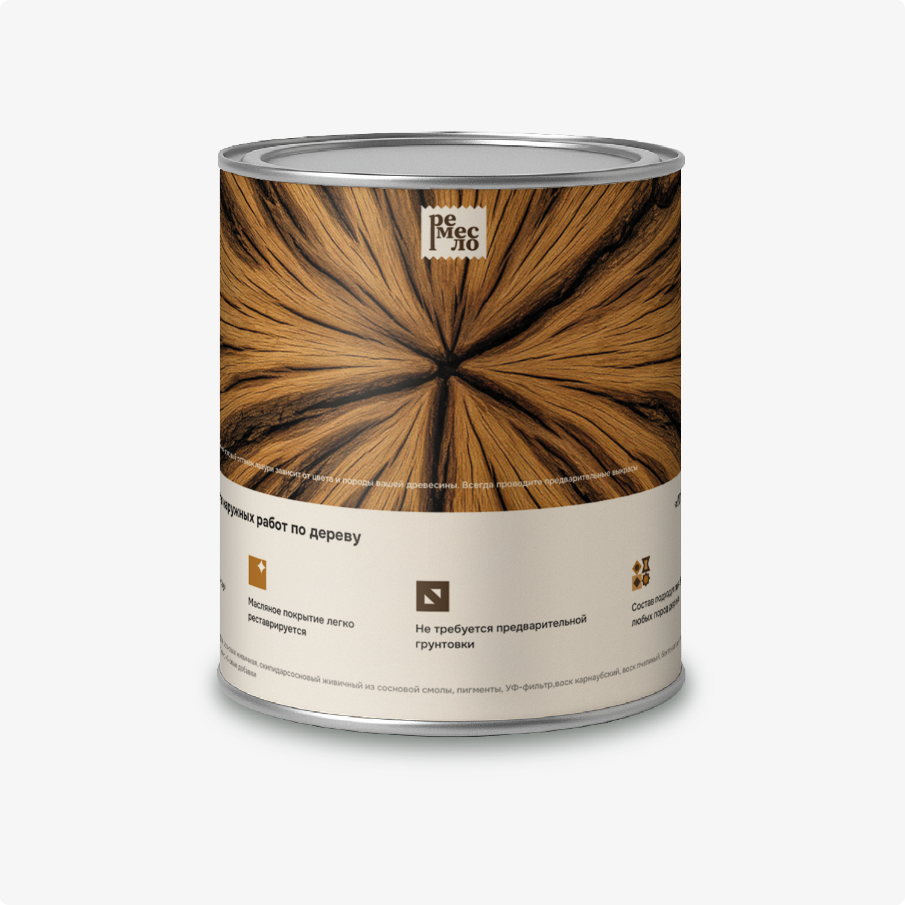

Главная особенность этой верстки продукта — ее модульность. В макете легко менять содержимое: графику, описание, название и т.д.
Верстка наклейки

За счет большой картинки слэба дуба, товар выделяется на полках магазинов
Из-за грамотной иерархии шрифтов и понятного расположения информации, покупателю проще ориентироваться в данных на наклейке
Преимущества масла подкреплены инфографикой, разработанной для этой версии товара, которые при желании также просто видоизменять